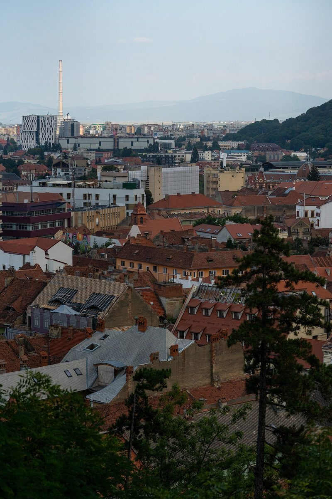
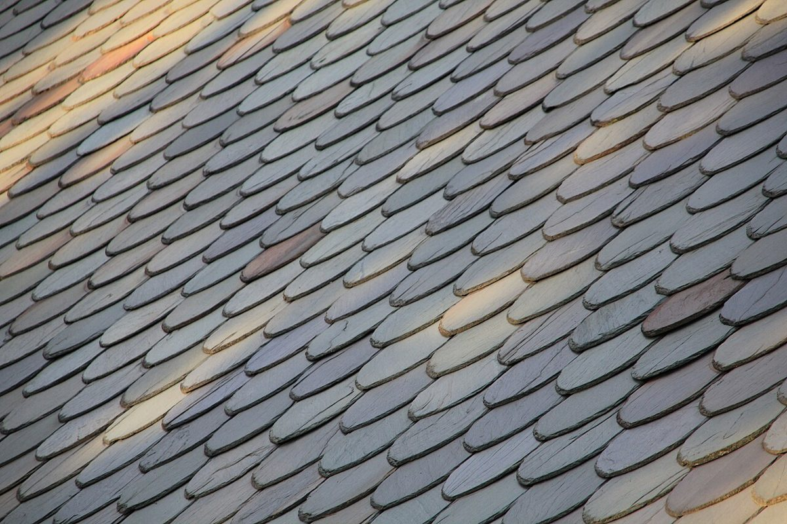
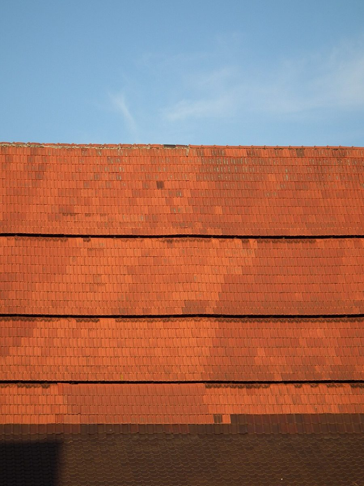
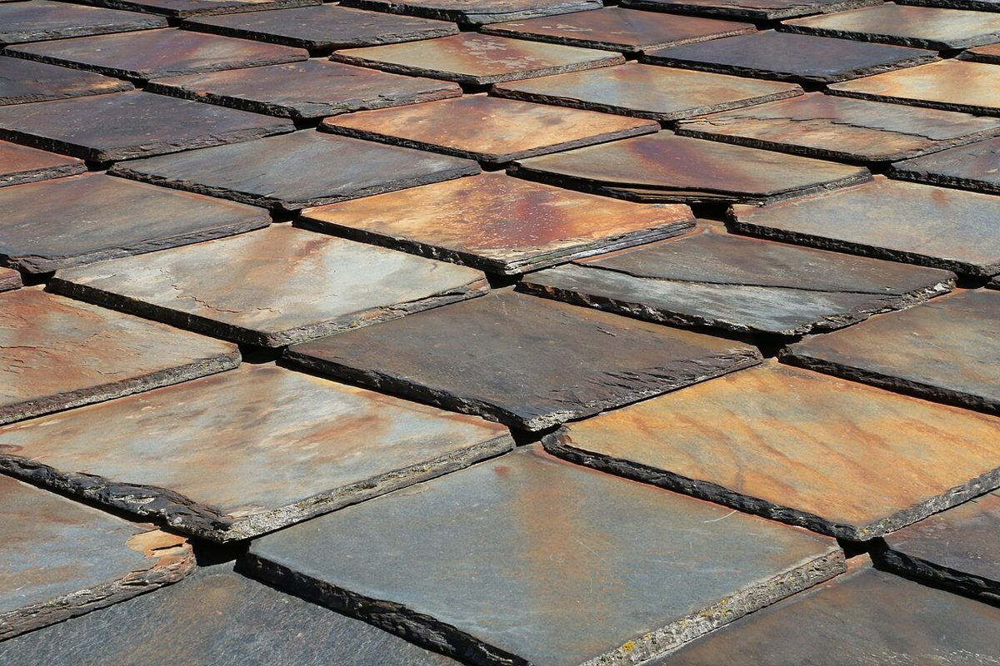
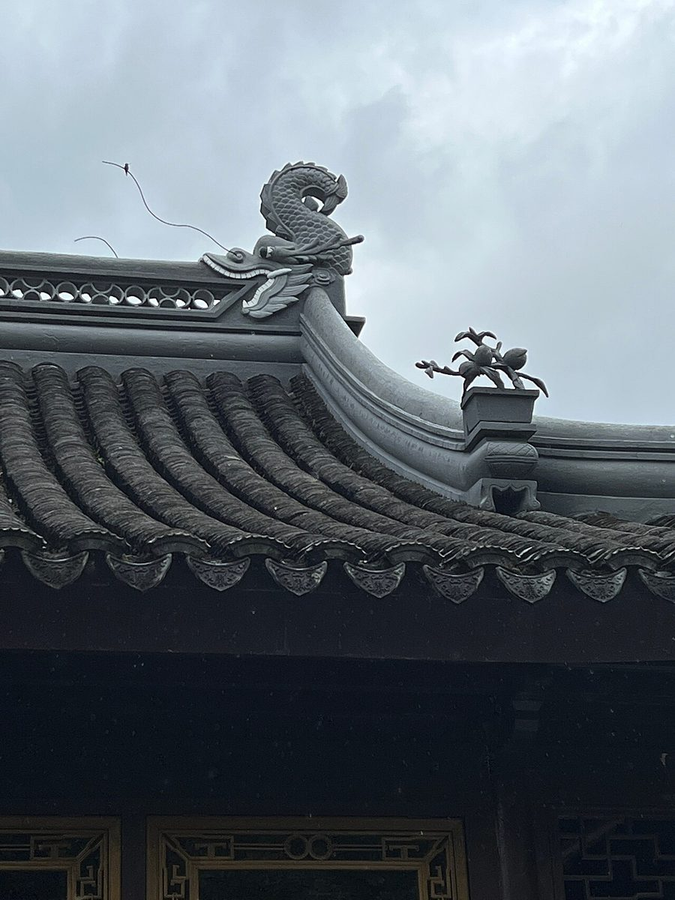
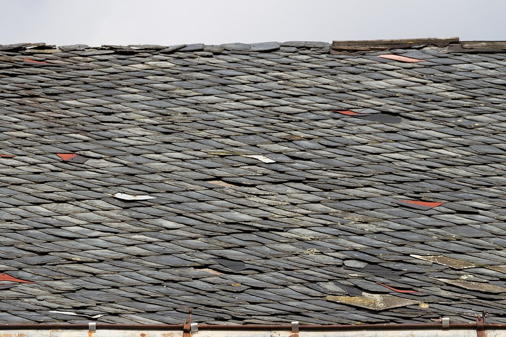
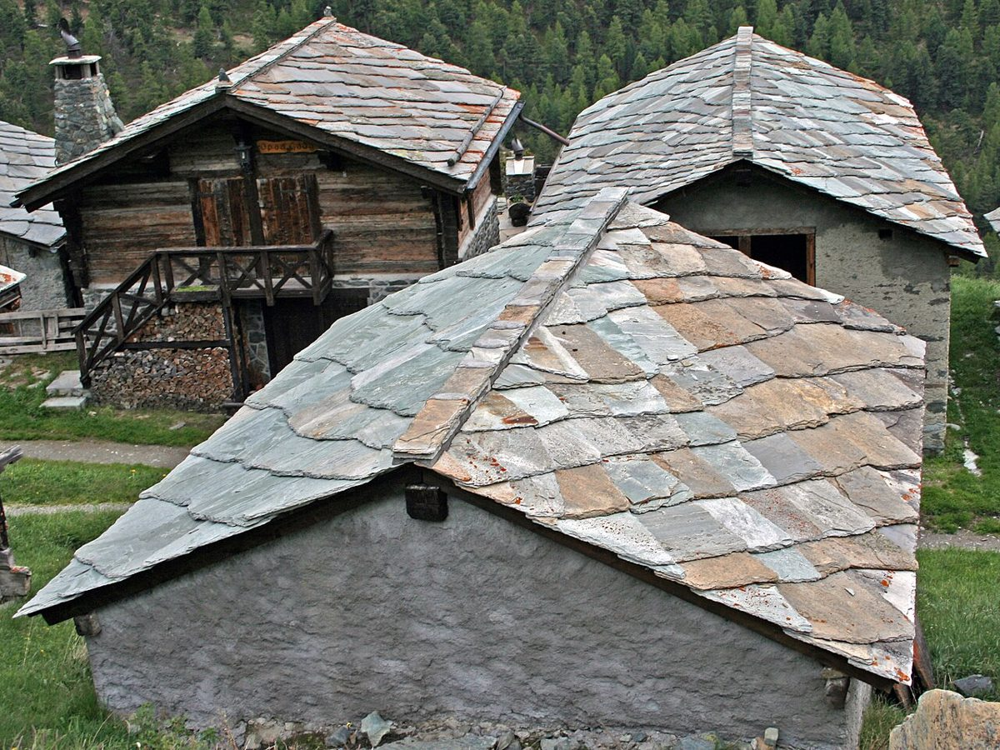

カフェ / 愛知県瀬戸市
the roof
愛知県瀬戸市のカフェ「the roof」のご案内ページです。営業時間やメニューなど、詳しいことは準備中。まずはInstagramをのぞいてみてください。

制作側の連想
屋号「the roof」から、屋根の勾配を。
店名の由来は分かりません。制作側は「roof(屋根)」という言葉から、屋根の傾きを表す「勾配」を連想しました。日本では「三寸勾配」「五寸勾配」のように、横10に対する高さで傾きを呼びます。そこでこのサイトは、5つのページを三寸から七寸までの勾配にたとえて並べています。お店の理念・由来とは無関係の、制作側の連想です。
いろいろな屋根(イメージ)
世界の屋根を、すこしだけ。
写真は瀬戸市やお店のものではありません。屋根のイメージとして選んだ、国外・撮影地不明のフリー素材です。






ご案内
お店のこと(確認できたものだけ)
| 所在地 | 〒489-0821 愛知県瀬戸市薬師町7 |
|---|---|
| 電話 | 070-7785-7894 |
| 営業時間 | 準備中 |
| 定休日 | 準備中 |
| ご予約 | 準備中 |
| 駐車場 | 準備中 |
| SNS | Instagram @the_roof_737 |